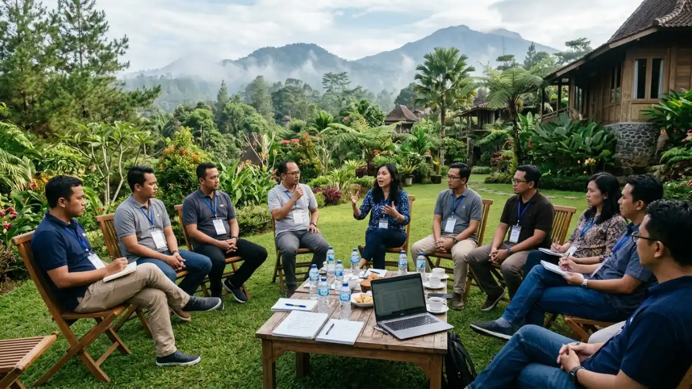
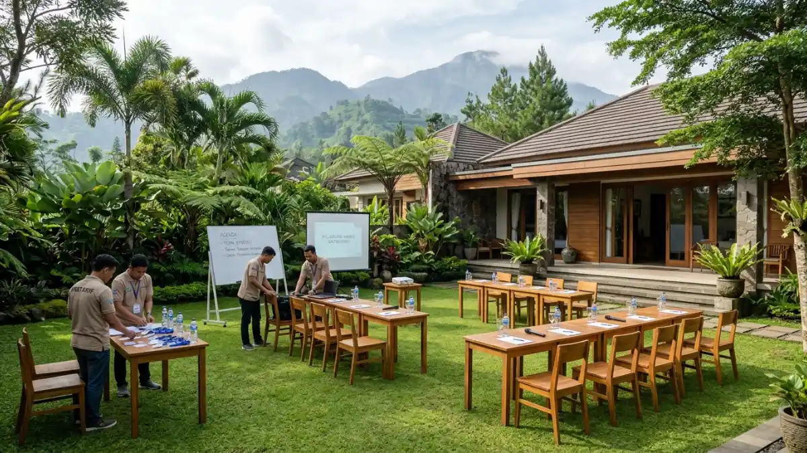

Ilustrasi Peserta sedang melaksanakan kegiatan meeting outdoor di Batu Malang dengan suasana alam yang sejuk.Tempat meeting outdoor adalah lokasi rapat di ruang terbuka Kota Batu yang memanfaatkan udara sejuk, pemandangan alam, dan area luas untuk kegiatan kantor.
- Apa Itu Tempat Meeting Outdoor di Batu Malang?
- Mengapa Batu Menjadi Pilihan untuk Meeting Outdoor?
- Apa Saja Jenis Tempat Meeting Outdoor di Batu Malang?
- Fasilitas Apa yang Perlu Ada di Tempat Meeting Outdoor?
- Bagaimana Cara Kerja Meeting Outdoor dari Persiapan hingga Pelaksanaan?
- Faktor Apa yang Menentukan Pilihan Tempat Meeting Outdoor?
- Bagaimana Perbandingan Meeting Outdoor dan Meeting Indoor?
- Apa Kesalahan Umum saat Memilih Tempat Meeting Outdoor?
- Tips agar Meeting Outdoor di Batu Berjalan Lancar
- Kesimpulan
- FAQ
Apa Itu Tempat Meeting Outdoor di Batu Malang?
Tempat meeting outdoor adalah lokasi rapat di ruang terbuka Kota Batu yang memanfaatkan udara sejuk, pemandangan alam, dan area luas untuk kegiatan kantor.
Meeting outdoor berarti rapat, briefing, workshop, atau evaluasi tim yang dilaksanakan di luar ruangan.
Di Kota Batu, Jawa Timur, konsep ini umumnya dijalankan di camping ground, halaman villa, taman resort, kebun agrowisata, dan kafe bertaman.
Kota Batu berada di dataran tinggi sehingga suhunya cenderung lebih sejuk dibanding kota di dataran rendah, meskipun kondisi tepatnya bervariasi menurut lokasi dan musim.
Tempat meeting outdoor di Batu Malang ditujukan bagi perusahaan, instansi pemerintah, sekolah, komunitas, dan organisasi yang menginginkan suasana rapat berbeda dari ruang kantor.
Kegiatan yang lazim digelar meliputi rapat perencanaan tahunan, evaluasi kinerja, pelatihan singkat, gathering keluarga besar perusahaan, dan sesi kreatif seperti brainstorming.
Kata Malang pada kata kunci merujuk pada kawasan Malang Raya, yaitu Kota Malang, Kota Batu, dan Kabupaten Malang. Artikel ini berfokus pada wilayah Kota Batu.
Konsep ini penting karena lingkungan memengaruhi suasana diskusi. Ruang terbuka membantu peserta merasa lebih santai sehingga percakapan cenderung lebih cair.
Namun meeting outdoor memiliki batasan: cuaca, kebisingan, dan keterbatasan perangkat presentasi perlu direncanakan sejak awal.
Mengapa Batu Menjadi Pilihan untuk Meeting Outdoor?
Batu menjadi pilihan meeting outdoor karena udaranya sejuk, akses dari Kota Malang dekat, dan pilihan akomodasi serta wisata tersedia dalam jumlah besar.
Kota Batu adalah salah satu destinasi wisata utama di Jawa Timur. Menurut data Dinas Pariwisata Kota Batu yang dilaporkan Malang Post pada 20 Januari 2026, sebanyak 9.794.603 wisatawan mengunjungi Kota Batu sepanjang periode Januari sampai Desember 2025.
Angka tersebut turun dari 11.005.189 kunjungan pada 2024, tetapi tetap menunjukkan bahwa ekosistem wisata, penginapan, dan layanan pendukung di Kota Batu sangat aktif.
Kunjungan bulanan juga berbeda jauh. Desember 2025 menjadi puncak dengan 1.807.770 wisatawan, sedangkan Maret 2025 menjadi titik terendah dengan 234.014 wisatawan (Disparta Kota Batu, 2025).
Bagi penyelenggara meeting, selisih ini penting. Pada bulan ramai, akses jalan dan ketersediaan venue cenderung lebih ketat.
Pada bulan yang lebih sepi, jadwal biasanya lebih fleksibel dan ruang negosiasi dengan pengelola venue umumnya lebih terbuka.
Selain itu, Kota Batu berdekatan dengan Kota Malang yang memiliki bandara dan stasiun kereta api.
Peserta dari luar kota dapat tiba di Malang lalu melanjutkan perjalanan darat ke Batu. Waktu tempuh bergantung pada kondisi lalu lintas, terutama pada akhir pekan dan musim libur.
Apa Saja Jenis Tempat Meeting Outdoor di Batu Malang?
Jenis tempat meeting outdoor di Batu meliputi camping ground, villa berhalaman, resort bertaman, area agrowisata, serta kafe dan restoran dengan area terbuka.
Camping ground dan area lapangan terbuka
Camping ground menawarkan lahan luas yang fleksibel ditata untuk kursi melingkar, tenda pertemuan, atau panggung kecil.
Jenis ini cocok untuk kelompok besar dan kegiatan yang memadukan rapat dengan outbound.
Keterbatasannya biasanya ada pada toilet, listrik, dan perlindungan dari hujan, sehingga penyelenggara perlu memastikan ketersediaan tenda atau gazebo.
Villa dan resort dengan halaman luas
Villa dan resort berhalaman menyediakan kombinasi ruang terbuka dan area tertutup cadangan. Kamar, ruang makan, dan toilet umumnya tersedia dalam satu lokasi.
Jenis ini cocok untuk meeting satu hari penuh atau menginap, dan untuk perusahaan yang menginginkan kenyamanan lebih tinggi bagi pesertanya.
Agrowisata dan kebun
Kawasan agrowisata, misalnya kebun apel atau sayur, menawarkan suasana khas Batu. Meeting biasanya berlangsung di gazebo atau area terbuka bersama aktivitas wisata ringan.
Tantangannya adalah kapasitas yang terbatas dan jadwal yang sering bersamaan dengan pengunjung umum.
Kafe dan restoran dengan area terbuka
Kafe atau restoran bertaman cocok untuk meeting kecil dengan durasi pendek. Akses makanan dan minuman mudah, tetapi privasi dan kontrol suara lebih terbatas karena ruang dipakai bersama pengunjung lain.

Ilustrasi Salah satu contoh venue untuk gathering perusahaan di Batu yang memadukan ruang terbuka dan fasilitas lengkap.Fasilitas Apa yang Perlu Ada di Tempat Meeting Outdoor?
Fasilitas utama tempat meeting outdoor meliputi area teduh, tempat duduk memadai, listrik stabil, sinyal internet, toilet bersih, area parkir, dan opsi ruang tertutup saat hujan.
Setiap fasilitas menentukan kelancaran acara, sehingga perlu dicek langsung saat survei. Berikut fasilitas yang paling berpengaruh:
- Area teduh dan atap cadangan: melindungi peserta dari terik matahari dan hujan ringan, serta menjaga layar presentasi tetap terlihat.
- Listrik dan stop kontak: dibutuhkan untuk proyektor, pengeras suara, laptop, dan pengisian daya. Tanyakan kapasitas daya dan ketersediaan genset.
- Sinyal seluler dan Wi-Fi: penting untuk presentasi daring, unduhan materi, dan komunikasi panitia. Sinyal di area pegunungan dapat berbeda antar titik.
- Toilet dan tempat cuci tangan: jumlahnya harus sebanding dengan jumlah peserta dan kondisinya terawat.
- Parkir: pastikan area parkir mampu menampung kendaraan pribadi atau bus, termasuk jalur putar balik.
- Dapur atau akses katering: mempermudah penyajian konsumsi tepat waktu.
- Ruang cadangan: aula, gazebo tertutup, atau ruang serbaguna yang siap dipakai jika cuaca berubah.
Bagaimana Cara Kerja Meeting Outdoor dari Persiapan hingga Pelaksanaan?
Meeting outdoor berjalan dalam tiga tahap: persiapan tujuan dan venue, pelaksanaan sesi dengan agenda ketat, dan evaluasi hasil setelah acara selesai.
Pada tahap persiapan, panitia menetapkan tujuan meeting, jumlah peserta, durasi, dan anggaran. Berdasarkan itu, panitia memilih venue, melakukan survei, memesan tanggal, dan menyusun rundown.
Sebaiknya panitia juga menyiapkan daftar perlengkapan seperti proyektor portabel, pengeras suara, papan tulis, alat tulis, dan perlengkapan pertolongan pertama.
Pada tahap pelaksanaan, tim menata lokasi lebih awal, menguji perangkat, dan memastikan konsumsi siap.
Sesi inti sebaiknya diletakkan pada jam ketika cuaca umumnya lebih bersahabat, misalnya pagi hari.
Agenda perlu ketat karena suasana santai membuat waktu mudah molor. Pemandu waktu membantu menjaga ritme.
Pada tahap evaluasi, panitia mengumpulkan umpan balik peserta, mencatat keputusan rapat, dan menetapkan tindak lanjut.
Evaluasi venue juga berguna untuk acara berikutnya, misalnya mencatat fasilitas yang kurang atau layanan yang memuaskan.
Faktor Apa yang Menentukan Pilihan Tempat Meeting Outdoor?
Faktor penentu tempat meeting outdoor meliputi jumlah peserta, lokasi dan akses, fasilitas, kondisi cuaca, anggaran, serta kebutuhan agenda dan keamanan peserta.
Jumlah peserta menentukan kapasitas minimum dan tata letak. Lokasi dan akses menentukan waktu tempuh, kemudahan bus, dan risiko kemacetan.
Fasilitas menentukan apakah agenda presentasi, diskusi kelompok, atau permainan dapat berjalan.
Cuaca menentukan perlunya atap, tenda, atau ruang cadangan. Anggaran menentukan jenis venue dan paket layanan yang realistis.
Kebutuhan agenda juga berpengaruh. Meeting formal dengan presentasi panjang membutuhkan listrik dan layar yang baik, sedangkan sesi kreatif lebih cocok di area lapang.
Keamanan peserta mencakup kondisi jalan, penerangan, dan kesiapan menghadapi keadaan darurat.
Untuk pembahasan lebih rinci, baca panduan cara memilih tempat meeting outdoor di Batu yang tepat.
Bagaimana Perbandingan Meeting Outdoor dan Meeting Indoor?
Secara umum, meeting outdoor unggul dalam suasana dan fleksibilitas ruang, sedangkan meeting indoor unggul dalam kendali cuaca, suara, dan perangkat presentasi.
Meeting outdoor memberi suasana lebih santai, ruang gerak lebih luas, dan peluang memadukan diskusi dengan aktivitas kelompok.
Pemandangan alam juga dapat membantu peserta lebih rileks. Sebaliknya, cuaca, suara angin, dan silau matahari dapat mengganggu presentasi.
Meeting indoor menawarkan kontrol lebih baik atas pendingin atau pemanas ruangan, layar, akustik, dan privasi.
Biayanya bisa lebih mudah diprediksi karena fasilitas sudah standar. Namun suasananya cenderung lebih formal dan kurang cocok untuk sesi kreatif atau pembangunan tim.
Pilihan terbaik bergantung pada tujuan. Rapat yang membahas dokumen sensitif atau data rumit lebih cocok di dalam ruangan.
Acara evaluasi santai, brainstorming, dan gathering cocok di luar ruangan. Banyak penyelenggara memakai model campuran: sesi formal di ruang tertutup, sesi kreatif di area terbuka.
Apa Kesalahan Umum saat Memilih Tempat Meeting Outdoor?
Kesalahan umum meliputi tidak menyiapkan rencana cadangan hujan, mengabaikan sinyal dan listrik, menaksir kapasitas terlalu besar, dan tidak survei lokasi sebelum memesan.
Kesalahan pertama adalah memesan venue hanya berdasarkan foto. Foto tidak menunjukkan kondisi toilet, kekuatan sinyal, atau kebisingan sekitar.
Survei langsung atau minimal panggilan video dengan pengelola membantu menghindari kejutan.
Kesalahan kedua adalah mengabaikan rencana cuaca. Di dataran tinggi, hujan dapat turun mendadak, terutama pada musim penghujan. Tanpa atap atau ruang cadangan, seluruh agenda dapat terganggu.
Kesalahan ketiga adalah salah menghitung kapasitas. Luas lahan yang besar belum tentu berarti area efektif untuk duduk dan bergerak.
Kesalahan keempat adalah tidak membandingkan penawaran, sehingga panitia melewatkan biaya tambahan atau syarat pembatalan yang merugikan.
Kesalahan kelima adalah menyusun agenda terlalu padat, padahal perjalanan naik ke area pegunungan dan waktu istirahat memerlukan alokasi tersendiri.
Tips agar Meeting Outdoor di Batu Berjalan Lancar
Tips utama meeting outdoor di Batu adalah survei lokasi, pilih jam pagi, siapkan rencana hujan, uji perangkat presentasi, dan bawa pakaian hangat untuk peserta.
Berangkatlah lebih awal untuk menghindari kepadatan jalan, terutama pada akhir pekan dan musim libur.
Informasikan peserta mengenai kondisi udara yang bisa dingin pada pagi dan malam hari, sehingga mereka membawa jaket atau pakaian hangat.
Uji seluruh perangkat sehari sebelumnya, termasuk pengeras suara dan baterai cadangan.
Siapkan materi dalam bentuk cetak atau unduhan luring bila sinyal tidak stabil. Tunjuk satu penanggung jawab lapangan yang berkomunikasi langsung dengan pengelola venue.
Sediakan konsumsi hangat dan air minum yang cukup. Terakhir, dokumentasikan hasil rapat secara tertulis di lokasi agar keputusan tidak hilang setelah suasana santai berakhir.
Kesimpulan
Tempat meeting outdoor di Batu Malang cocok untuk acara yang membutuhkan suasana santai dan kolaboratif.
Pilih jenis venue sesuai jumlah peserta dan tujuan, cek fasilitas inti, dan siapkan rencana cuaca.
Gunakan data musim kunjungan untuk menentukan jadwal, lakukan survei, dan bandingkan penawaran sebelum memesan.
Dengan persiapan ini, meeting outdoor dapat berjalan lancar dan produktif.
FAQ